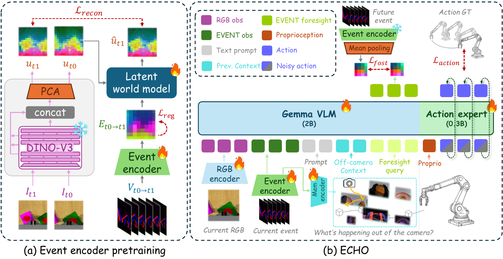
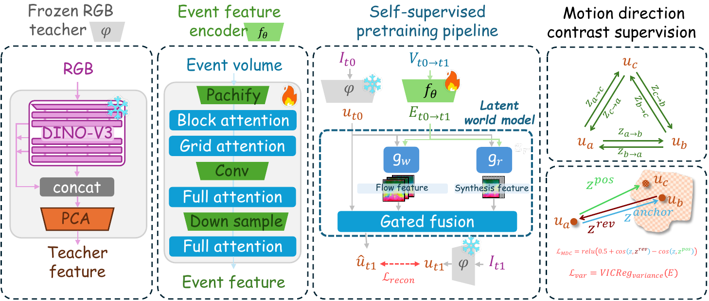
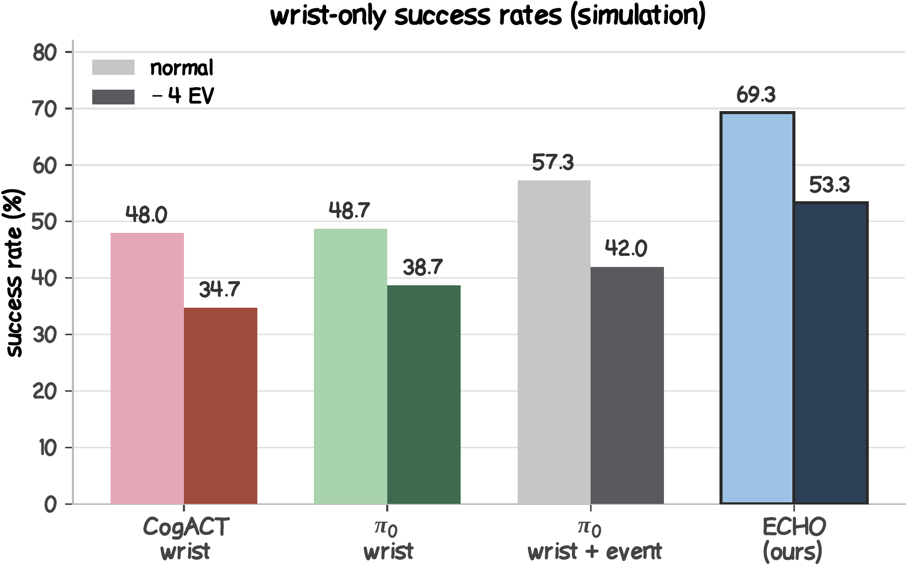

A six-bin event volume is encoded into compact tokens that complement wrist RGB observations.
Framework Overview
ECHO is a wrist-only latent world action model that integrates event observations across past, present, and future. A pretrained event encoder extracts motion tokens, trajectory memory preserves off-camera context, and event foresight queries anticipate changes caused by the next action.

Visited gripper cells remain addressable after wrist motion moves them outside the current view.
Learnable queries predict the event representation of the window covered by the planned action.
Event Encoder
The encoder is built to turn a short wrist-camera event window into compact motion features. Events are accumulated into six temporal bins with signed polarity, then a convolution–attention network maps the volume to 64 spatial latent tokens.

Patch embedding, block and grid attention, convolution, downsampling, and full attention extract spatiotemporal motion features from the event volume.
A warp branch moves existing teacher features, while a synthesis branch models newly revealed content. A learned gate combines them to predict the next RGB teacher feature.
Motion-direction contrast brings a duration-jittered event view close to the original and separates a time-reversed view. Variance regularization helps keep the latent features informative.
Training Recipe
ECHO learns event motion features before training the manipulation policy. The stages below show how the encoder, memory, and foresight come together.
| Stage | What happens | Purpose |
|---|---|---|
| Event encoder pretraining | Learn motion features by predicting visual changes from event streams. | Give the policy a strong event representation. |
| Policy initialization | Bring the pretrained encoder into the policy and prepare a fixed encoder for future-event targets. | Connect current events with action learning and foresight. |
| Joint policy training | Train action prediction together with trajectory memory and event foresight. | Use past, present, and anticipated motion for manipulation. |
Real-World Robot Experiments
Two wrist-only tasks compare Pi0 and ECHO under normal and dark lighting. In each video, the task, lighting condition, policy, and outcome are shown directly on the footage.
Put the toy into the plate
Pi0 · normal lighting · success
Put the toy into the plate
ECHO · normal lighting · success
Put the toy into the plate
Pi0 · dark lighting · failure
Put the toy into the plate
ECHO · dark lighting · success
Ring the bell twice
Pi0 · normal lighting · failure
Ring the bell twice
ECHO · normal lighting · success
Ring the bell twice
Pi0 · dark lighting · failure
Ring the bell twice
ECHO · dark lighting · success
Simulation Experiments
Selected successful wrist-only RLBench rollouts under normal lighting and a −4 EV exposure shift. Each video shows the simulated RGB view alongside the event stream, so the two sensing modalities can be compared directly.
The paired videos are representative rollouts; success rates over the full evaluation set are summarized below.
Close the laptop lid
Normal lighting
−4 EV exposure
Lower the toilet seat
Normal lighting
−4 EV exposure
Close the fridge
Normal lighting
−4 EV exposure
Take the umbrella out of the stand
Normal lighting
−4 EV exposure
Take the frame off the hanger
Normal lighting
−4 EV exposure
Water the plants
Normal lighting
−4 EV exposure
Performance Highlights

69.3%ECHO success under normal lighting.
53.3%ECHO success under −4 EV exposure.
+20.6points over RGB-only wrist.
+14.6points over RGB-only wrist in dark lighting.
Citation
@article{echo2026,
title = {ECHO: Event-Augmented Context with Hindsight and Outlook for Wrist-Only Manipulation},
author = {Wang, Xinyue and Jiang, Yicheng and Gan, Zesen and others},
year = {2026}
}